UI slots and pages
Slots above the composer, in the thread, sidebar, and title bar, plus pages, menu items, and session row actions.
registerSlot
UI, commands, tools for the model, agent-loop hooks, and the requests and replies sent to models can all be taken over by extensions. A built-in local gateway lets Codex, Claude Code, and 50+ other agents share one provider pool.
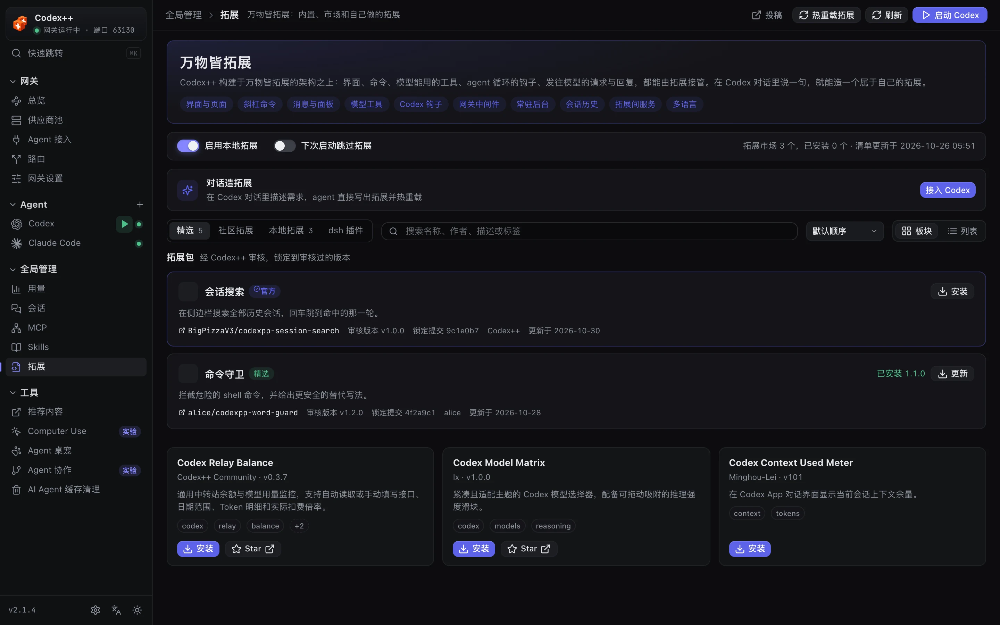
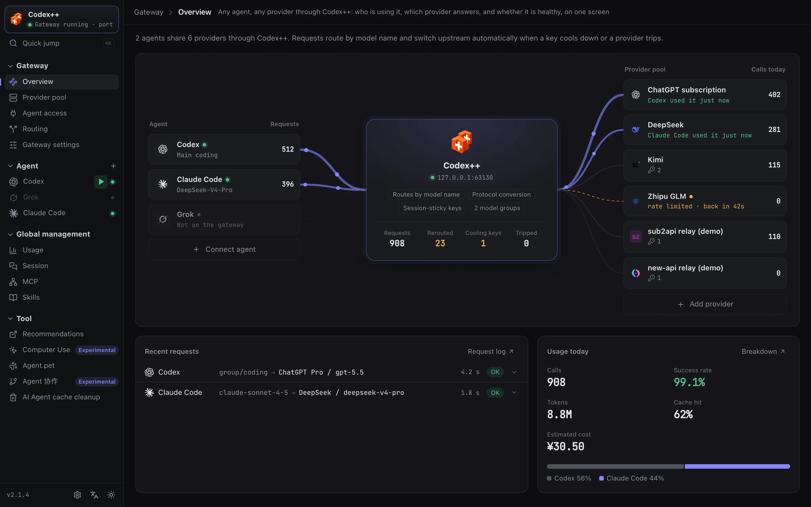
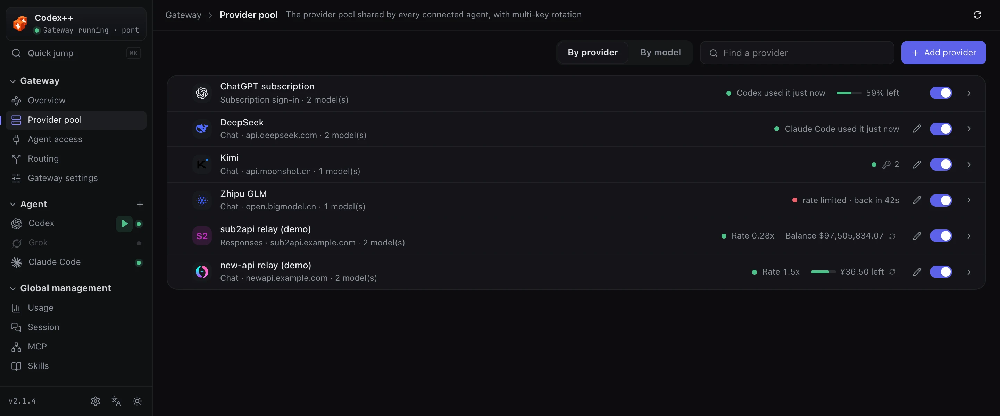
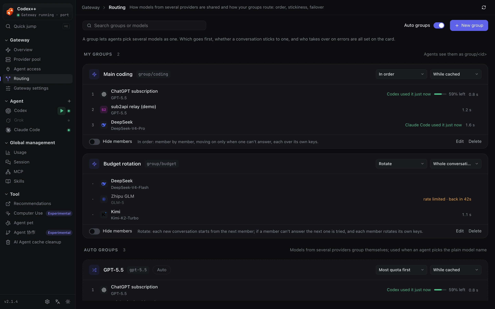
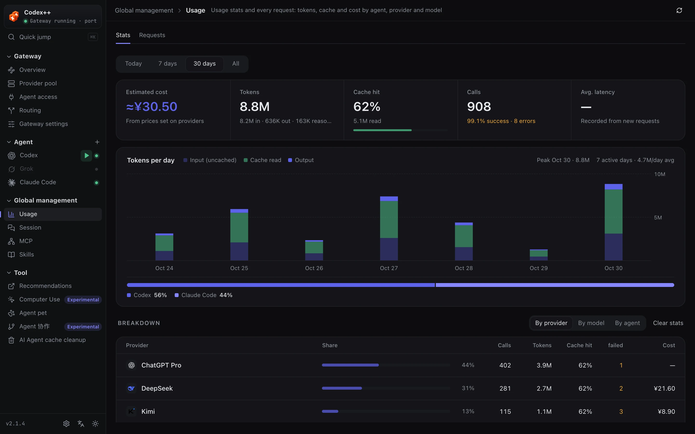
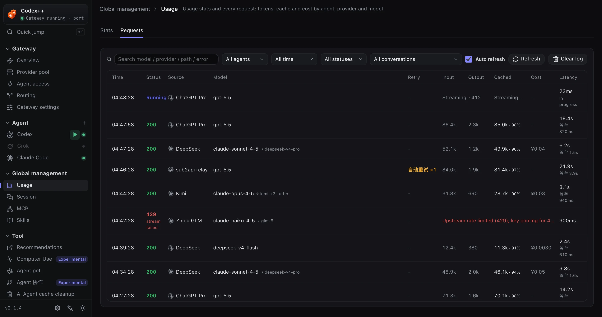
Featured, community, local extensions, and dsh plugins on one page: install others' work and manage your own.
No code required. Once connected, Codex can inspect its own page, write the extension, hot-reload it, and take a screenshot to check the result.
turn the send button into a 🐶 dogor
make the context ring a rainbow progress bar.
An extension is a folder with a codexpp.json. Every registration is undone automatically when it unloads, edits hot-reload, and a broken extension never takes others down.
Slots above the composer, in the thread, sidebar, and title bar, plus pages, menu items, and session row actions.
registerSlot
Typing / suggests extension commands with Tab completion; add icon buttons next to Send.
registerCommand
Add buttons or content under each message, and a right-hand panel that the main area makes room for.
registerSidePanel
Declare tools in the manifest and the model calls them through the Codex++ extension MCP server.
tools
Before and after tools, at turn end, and more, dispatched to every extension by Codex++.
hooks
Rewrite requests before they go upstream, rewrite response streams, and customize retries on failure.
gateway
Change arguments before a tool runs, run it on the tool's behalf, or rewrite its result.
toolPipeline
Long-running background processes; extensions provide and call services by name, across processes too.
backend
Read-only session queries and subscriptions; declared config becomes a settings form, with translations.
config
{
"id": "pomodoro",
"name": "Pomodoro",
"version": "0.1.0",
"engines": { "codexpp": "^2.1" },
"renderer": ["renderer.js"]
}
codexPlus.extension((ctx) => { const bar = ctx.registerSlot({ slot: "composer.above", render: ({ container }) => { container.textContent = "🍅 25:00"; } }); ctx.registerCommand({ name: "focus", description: "Start focusing", run: () => ctx.toast("Focus for 25 minutes") }); ctx.setInterval(() => bar.refresh(), 1000); // cleaned up on unload });
See the extension guide (Chinese) for the full API; type declarations live in types/.
Featured, community, local extensions, and dsh plugins all live on the manager's Extensions page. Before installing, you see every capability an extension declares.
Every entry is reviewed by Codex++ and installs the exact reviewed commit; later changes reach you only after another review. There is a block list, and impostors with the same id are flagged.
Click Publish on a local extension: it checks the manifest, secrets, and size, then creates the repo, tags, uploads the release, and adds the topic, showing every step.
Public GitHub repos tagged codexpp-extension show up here automatically, marked unreviewed. Before install you see the background processes, hooks, gateway middleware, and model tools they request; installs start disabled.
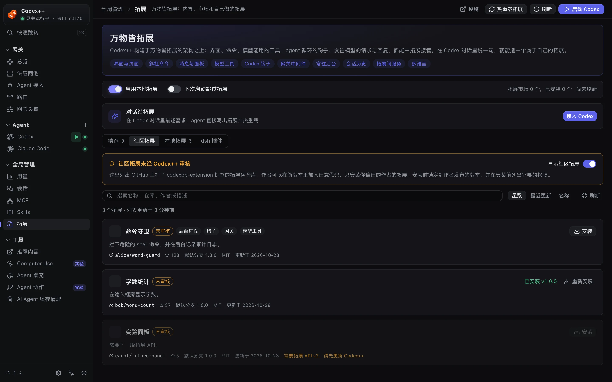
DeepSeek Harness tool plugins run inside Codex through an MCP server managed by Codex++, skills go into Codex Skills, and system prompts and events become gateway instructions and Codex hooks. Anything that cannot run is explained item by item.
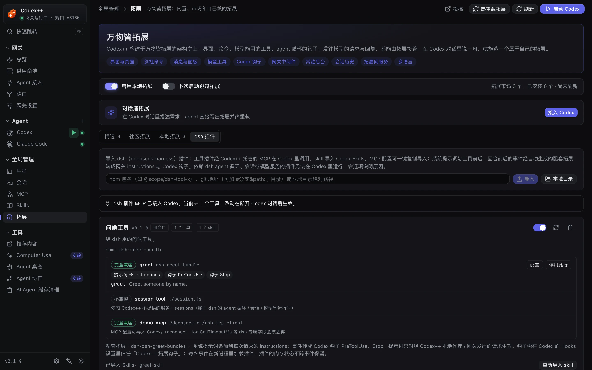
Once connected, an agent sends every request to Codex++ on your machine. It picks a provider from the pool by model name, switches keys on rate limits and providers on errors, and the agent never notices.
127.0.0.1 · runs locally
A bare model name, a specific provider, or a group; models offered by several providers group themselves.
Key rotation, rate-limit cooldown, 401 disable; sign ChatGPT, Copilot, Cursor, and more into the pool.
Anthropic, Chat, Responses, and Gemini convert into each other, so agents and upstreams need not speak the same protocol.
Tokens, cache, and estimated cost for every request, summed by agent, provider, and model.
deepseek-v4-proAny provider in the pool that offers it; when several do, they form a group and fail over in orderdeepseek/deepseek-v4-proOnly that providergroup/codingA group you created, using its routing modeCLI, desktop, and IDE agents; only the ones installed on your machine are listed. Claude Code can use Chat and Responses upstreams too.
Sign in inside the gateway to see plan and remaining quota, separate from each agent's own sign-in.
Every enhancement has its own switch; with the master switch off, provider and launch management keep working.
Expose the desktop and Chrome control built into the Codex desktop app over MCP to Claude Code, Claude Desktop, DeepSeek Harness, and more. Click Connect and restart the client.
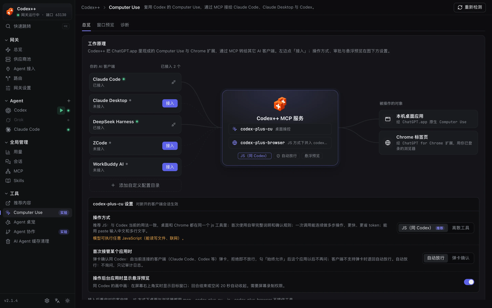
Say “Have DeepSeek implement this” in a Codex chat and the result comes back to the same chat; busy agents queue tasks.

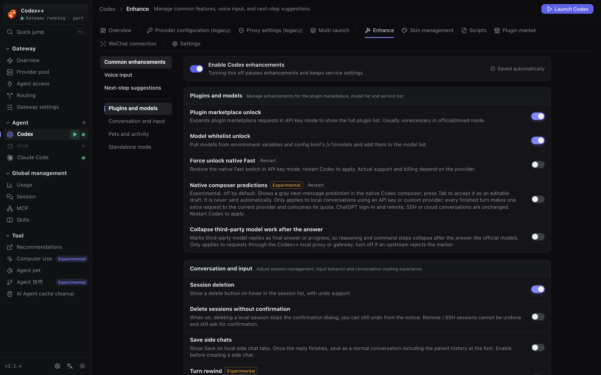
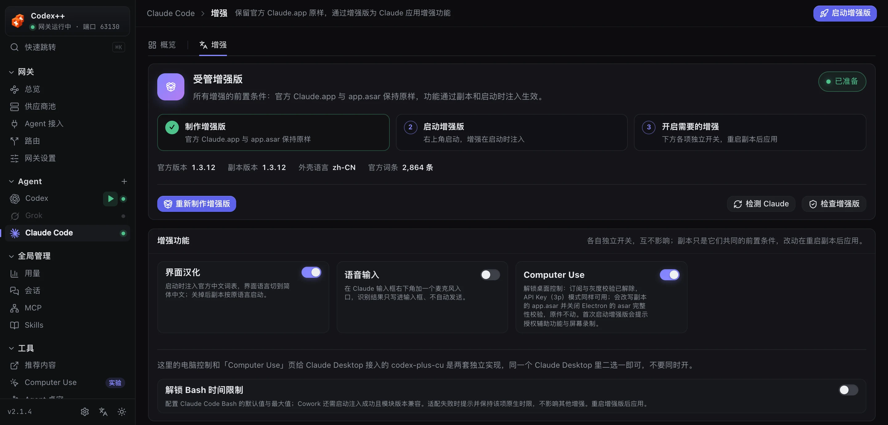
Local Codex, Claude Code, Claude Desktop, and Grok sessions in one list to search, delete, and undo.
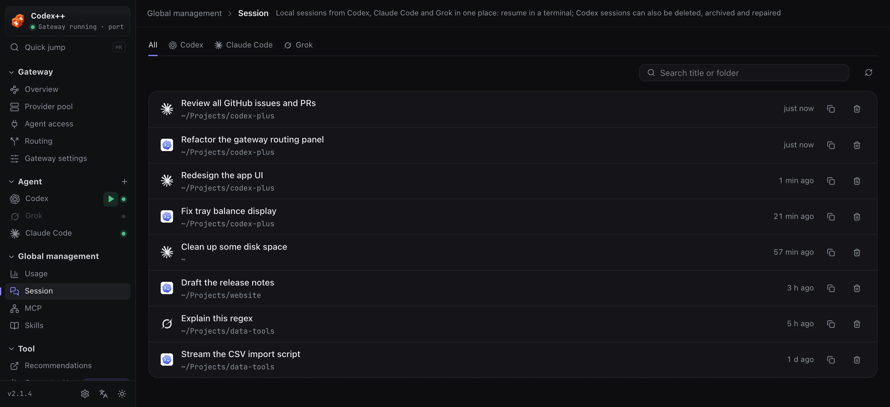
One isolated instance per provider identity, with separate config, sessions, and user data.
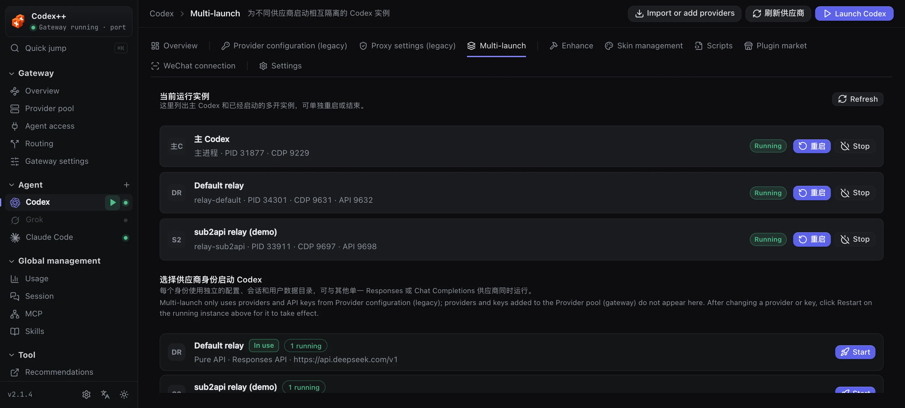
Output throughput, cache hits, and context usage under the composer.
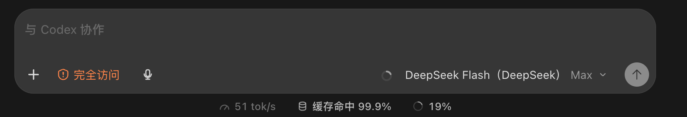
Per-model context windows, prices, and reasoning levels.
Standard / ⚡ Fast controls with a pure API key.
Switch models and check usage and recent requests from the tray.
Enable MCP and Skills per agent; install and remove Codex plugins.
Scan to connect local Codex and dispatch work on the go.
A clickable pet that squishes with a sound; swap the image and sounds.
Scan and clear Codex, Claude, and Codex++ caches.
Community themes, custom images, and rainbow particle typing.
Launch Codex from Codex++ and these changes appear right inside the official app.
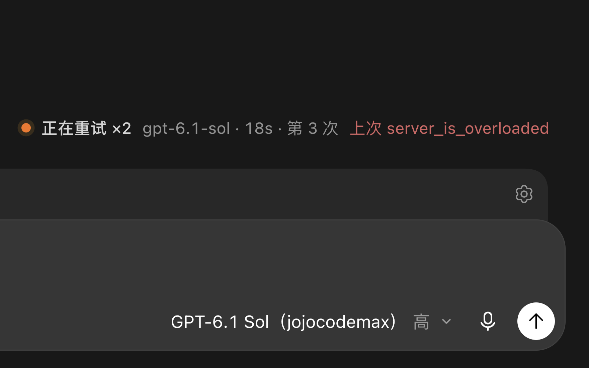
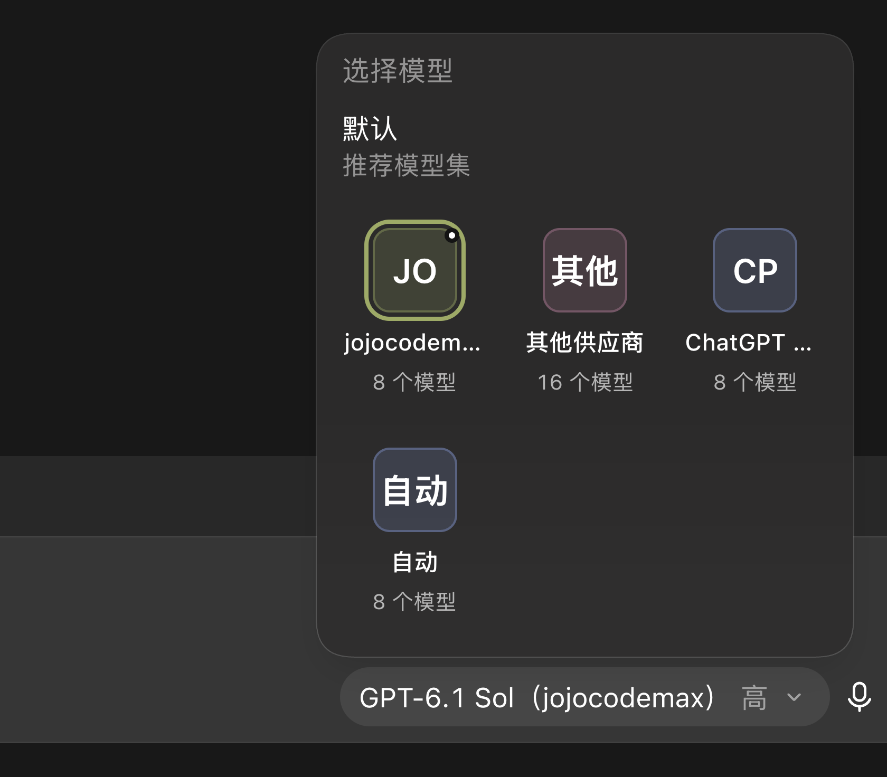
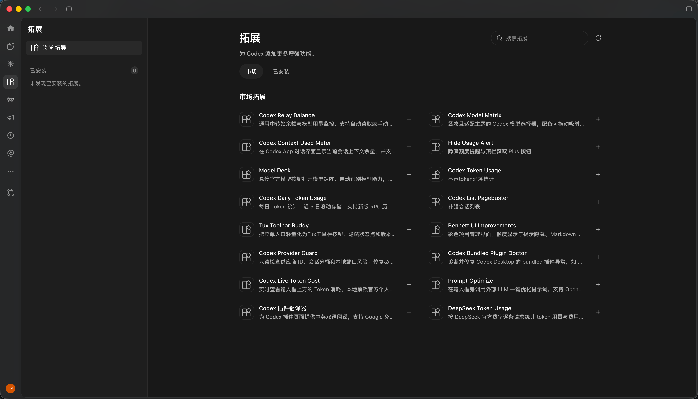
The two modes are independent; Codex switches between them with one click under Connection at the top of Connection & providers. Leave the gateway off and Codex++ works just like 1.x.
Codex, Claude Code, and Grok share one provider pool.
Best for: several agents, several providers, or several keys. The gateway is available while Codex++ is running.
Codex's original provider switching, fully preserved.
Best for: Codex only, or configs that keep working after Codex++ quits. Pick a provider under Codex → Connection & providers.
Each model can have its own context window. In the gateway, set it per model in the provider details (one click fills it from public data). In direct mode, add a suffix in the model list and Codex++ generates a dedicated model_catalog_json so Codex uses the right window per model.
# Model list in direct mode deepseek-v4-pro[1M] claude-opus-5.5[200K] your-model[128000]
Codex features work with the official Codex / ChatGPT desktop app; Claude and Grok features need their own clients installed.
Open Gateway → Provider pool: paste an API key, sign in to a ChatGPT / Copilot / SuperGrok subscription, or import several from direct mode or OpenCode. Models and prices fill in automatically.
Under Gateway → Agent access, switch on Codex, Claude Code, or Grok and pick a default model. Claude Code and Grok keep working in your terminal.
Click Launch Codex or the start button next to Codex in the sidebar to inject enhancements. Injection-based settings apply after restarting Codex from Codex++.
Prefer not to use the gateway? Direct mode still works: in Codex → Connection & providers, set Connection to Direct, pick a provider, and launch. API keys stay on your machine.
Featured and official extensions are reviewed by Codex++ and install the exact reviewed commit. Community extensions are not reviewed and authors can add any code in a new version: before install you see every capability they declare (background processes, hooks, gateway middleware, model tools, routes, page scripts), and installs start disabled. Only install extensions from authors you trust.
On the manager's Extensions page, click Connect to Codex under build by chatting, then start a new Codex chat and describe what you want. Extensions are written to your own extensions folder, and writes go through Codex's tool approval. A failing extension only affects itself: disable it under Local extensions or ask the agent to fix it.
Enhancements are only attached to an official app launched from Codex++. If you opened Codex yourself, the Codex row in the sidebar says it is not attached and its button becomes "Restart & attach"; click it. If the menu is still missing, check the app path, launch status and diagnostic logs under Settings → Codex (which includes install & maintenance) and Settings → Logs & Diagnostics. On macOS you can also turn on "Auto-takeover of the official app" so Codex++ takes over when you open the official app yourself.
In gateway mode, click "Test" in the provider details to see the status code, time to first token, and the upstream error text; failed requests under Usage → Requests show their reason too. In direct mode, run a model test or Provider Doctor in the provider details. API-only and official+API modes store credentials differently — don't hand-copy auth.json between them.
Agents connected to the gateway keep pointing at the local gateway, which only runs while Codex++ is open; reopening Codex++ restores them. To fall back to direct connections on exit, turn on "Restore direct connections when Codex++ exits" under Settings → Gateway (off by default). Codex++ always switches back to direct mode before installing an update.
Confirm that you saved and restarted Codex through Codex++. In direct mode, open the model's settings under Codex → Connection & providers, set “Fast (priority) support”, then save both the model and provider before restarting. In gateway mode, a model group supports Fast when every member does. Only declare support that your provider actually offers; unlocking the client control does not change service limits or billing.
Restart the client after connecting. Fully quit Claude Desktop first, because it rewrites its own config on exit. If the tools are still missing, check the config directory the client actually reads in the “Advanced” card on the Computer Use page, and make sure ChatGPT has Accessibility and Screen Recording permissions. macOS only for now.
Yes — individually or via the master switch. Codex++ depends on the official app's page structure, CDP and local data formats, so some features may need follow-up adaptations after official updates. Back up before changing provider settings or session data.
CODEX_HOME wins when set; otherwise ~/.codex. API keys never leave your machine — redact secrets before submitting feedback.
Open an issue with your OS, Codex++ version, repro steps, and redacted logs. Extensions, themes, and tips are always welcome.
Refer to each provider's website for services, prices, and offers.
Want to support the project or showcase your brand? Contact the maintainer.
Free and open source · AGPL-3.0 · Windows and macOS. Extensions, config, and session data stay on your own computer.